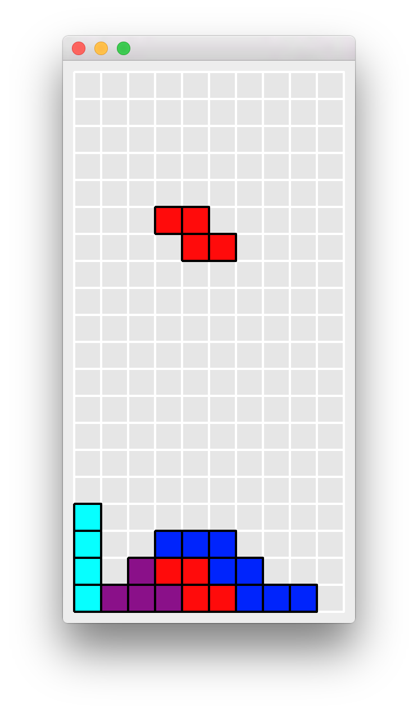
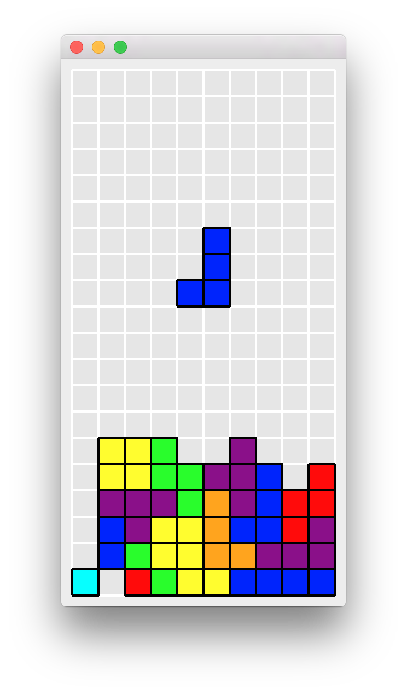

NAVIGATION
Tetris
Downloads
Prebuilt Binaries
Source Files
Preparation
Stanza
QT
Compilation
Writing a C Interface to QT
The .pro File
Exposing C++ Functionality through C Functions
C Bindings for QWidget
C Bindings for QTimer
Compiling our C Bindings
Writing a Stanza Interface to QT
QMouseEvent and QKeyEvent
QBrush, QColor, QPixmap, QPen
QApplication
QPainter
QWidget
QTimer
Key Codes
Writing Tetris
Tetris Tiles
The Tetris Board
Drawing the Board
Controlling the Game
Putting it Together
More Additions
Tetris
This project walks you through writing a clone of the popular Tetris game. It uses the QT5 cross-platform GUI library for producing its graphics. This tutorial will teach you how to interface to a non-trivial foreign library and write a fun and interactive program with Stanza.
|   |
Downloads
All of the source files for the tutorial can be downloaded here. If you simply wish to play with the finished product, we also provide a prebuilt binary.
Prebuilt Binaries
osxtetris.dmg - for Macintosh OS-X
Source Files
linuxtetris.zip - for Linux
osxtetris.zip - for Macintosh OS-X
Preparation
Stanza
This tutorial was written for Stanza 0.9.4 or higher. Please download that from www.lbstanza.org if you haven't already.
QT
This tutorial also requires a 64-bit version of the QT5 library. Please download that from www.qt.io/download if you haven't already.
Compilation
Download the source files for your platform from the links above and unzip them to a folder called tetris. To compile the project, first open the script/make.sh file and find the line that sets the QTDIR variable.
QTDIR=/Users/psli/Qt5.6.0Replace that line with the path to your own QT installation. By default, QT is installed in the user's home directory. Once that line has been replaced, open the terminal, navigate to the tetris folder, and type
./scripts/make.shIf everything is in the proper place, and QT has been properly installed, then the script should produce a binary called tetris. Run it by typing
./tetrisand enjoy playing a game of Tetris! Use the left, right, and down arrow keys to move the block; use the up arrow key to rotate the block; and use the spacebar to drop the block quickly to the bottom. Once the game is over, you may press spacebar again to start a new game.
Writing a C Interface to QT
We will using the cross-platform QT5 graphical user interface (GUI) library for displaying the graphics needed for Tetris. QT5 is written in the C++ programming language, and so the first thing that we will need to do is write bindings to it such that we may use QT from Stanza. In the future, a binding for QT will be provided as part of the Stanza libraries and this step can be skipped. If you wish to just proceed to writing Tetris you may skip ahead to the next section; otherwise, continue reading this section to learn about how to connect to a sophisticated foreign library.
The .pro File
QT comes with its own build system and preprocessor called qmake and moc for implementing its signals and slots system. Create a file called tetris.pro containing the following.
TEMPLATE = lib
CONFIG += staticlib
CONFIG += x86_64
QT += widgets
HEADERS = libqt.h
SOURCES = libqt.cppThe header file containing all of the definitions for our QT C bindings are in the file libqt.h and the source file containing their implementations are in the file libqt.cpp.
Exposing C++ Functionality through C Functions
The Stanza foreign function interface can only connect to the C programming language, and so the very first thing that needs to be done is to expose QT's functionality through a collection of C functions.
In the file libqt.cpp, the following include statements import the QT definitions that we're interested in writing bindings for.
#include<QApplication>
#include<QWidget>
#include<QTimer>
#include<QMouseEvent>
#include<QKeyEvent>
#include<QPainter>
#include<QBrush>
#include<QPen>
#include "libqt.h"We will write a C function to wrap over each C++ virtual function call, constructor call, and destructor call that we require. For example, the following functions wrap over the QPainter functionality required for Tetris.
extern "C" {
QPainter* QPainter_new (QWidget* widget){
return new QPainter(widget);}
void QPainter_delete (QPainter* p){
delete p;}
void QPainter_set_pen (QPainter* p, QPen* pen){
p->setPen(*pen);}
void QPainter_set_brush (QPainter* p, QBrush* brush){
p->setBrush(*brush);}
void QPainter_set_opacity (QPainter* p, float opacity){
p->setOpacity(opacity);}
void QPainter_draw_line (QPainter* p, int x, int y, int x2, int y2){
p->drawLine(x, y, x2, y2);}
void QPainter_draw_rect (QPainter* p, int x, int y, int width, int height){
p->drawRect(x, y, width, height);}
void QPainter_draw_pixmap (QPainter* p, int x, int y,
int width, int height, QPixmap* pixmap){
p->drawPixmap(x, y, width, height, *pixmap);}
}Notice especially that all the above definitions are wrapped in an
extern "C" { ... }block. This tells the C++ compiler that those functions are meant to be called using the C calling convention. The functionalities of the QApplication, QMouseEvent, QKeyEvent, QBrush, QColor, QPixmap, and QPen QT classes are wrapped up in an identical fashion to QPainter.
extern "C" {
QApplication* QApplication_new (int argc, char* argv[]){
return new QApplication(argc, argv);}
void QApplication_delete (QApplication* x){
delete x;}
int QApplication_exec (QApplication* x){
return x->exec();}
int QMouseEvent_x (QMouseEvent* e){
return e->x();}
int QMouseEvent_y (QMouseEvent* e){
return e->y();}
int QKeyEvent_key (QKeyEvent* e){
return e->key();}
QBrush* QBrush_new (){
return new QBrush();}
QBrush* QBrush_new_c (QColor* c){
return new QBrush(*c);}
void QBrush_delete (QBrush* b){
delete b;}
QColor* QColor_new (int r, int g, int b, int a){
return new QColor(r, g, b, a);}
void QColor_delete (QColor* c){
delete c;}
QPixmap* QPixmap_load (char* filepath){
QPixmap* pixmap = new QPixmap();
int r = pixmap->load(filepath);
if(r) return pixmap;
else return 0;
}
void QPixmap_delete (QPixmap* p){
delete p;}
int QPixmap_width (QPixmap* p){
return p->width();}
int QPixmap_height (QPixmap* p){
return p->height();}
QPen* QPen_new (QColor* c, int thickness){
return new QPen(*c, thickness, Qt::SolidLine);}
void QPen_delete (QPen* p){
delete p;}
}C Bindings for QWidget
The QT functionality above was easily exposed as a collection of functions because they don't require the use of any callbacks. The functions are called with simple values and simple values are returned. However, the QWidget class implements much of its functionality through the use of overridden virtual functions. For example, every time a keyboard key is pressed when a widget is in focus, its virtual keyPressEvent method is called by the QT framework. We will expose this functionality by writing a custom QWidget class that calls a special listener function for each of the virtual methods we are interested in exposing.
In libqt.h, include the following statements for importing the class definition we are interested in.
#include<QApplication>
#include<QWidget>
#include<QTimer>Here is the definition of our custom QWidget class.
class StzQtWidget : public QWidget{
Q_OBJECT
public:
StzQtWidget(QWidget* parent);
int width;
int height;
int listener;
QSize sizeHint() const;
protected:
void paintEvent(QPaintEvent *event);
void mousePressEvent(QMouseEvent* event);
void mouseReleaseEvent(QMouseEvent* event);
void mouseMoveEvent(QMouseEvent* event);
void keyPressEvent(QKeyEvent *event);
};It contains the extra fields, width and height, for indicating the preferred size of the widget. The field, listener, is the box identifier of the listener object that will handle the virtual function events. We are interested in handling paint events, mouse events, and keyboard events.
Here is the default constructor for our custom widget. It sets the default size, and we use -1 to indicate that there initially is no event listener.
StzQtWidget::StzQtWidget(QWidget* parent) : QWidget(parent) {
width = 100;
height = 100;
listener = -1;
}We override the definition of sizeHint to return the values of its width and height fields.
QSize StzQtWidget::sizeHint() const{
return QSize(width, height);
} The following code exposes the functionality of the QWidget virtual functions by having them call externally defined listener functions. Here, we simply provide the definitions of the listener functions. Later we will write implementations for these listener functions in Stanza.
extern "C" void QtWidget_paintEvent (int listener, QPaintEvent* event);
extern "C" void QtWidget_mousePressEvent (int listener, QMouseEvent* event);
extern "C" void QtWidget_mouseReleaseEvent (int listener, QMouseEvent* event);
extern "C" void QtWidget_mouseMoveEvent (int listener, QMouseEvent* event);
extern "C" void QtWidget_keyPressEvent (int listener, QKeyEvent* event);
void StzQtWidget::paintEvent(QPaintEvent* event){
QtWidget_paintEvent(listener, event);
}
void StzQtWidget::mousePressEvent(QMouseEvent* event){
QtWidget_mousePressEvent(listener, event);
}
void StzQtWidget::mouseReleaseEvent(QMouseEvent* event){
QtWidget_mouseReleaseEvent(listener, event);
}
void StzQtWidget::mouseMoveEvent(QMouseEvent* event){
QtWidget_mouseMoveEvent(listener, event);
}
void StzQtWidget::keyPressEvent(QKeyEvent *event){
QtWidget_keyPressEvent(listener, event);
}And, just as before, creation, deletion, and field accessors for our widget are exposed as a collection of C functions.
extern "C" {
StzQtWidget* QtWidget_new (QWidget* parent) {
return new StzQtWidget(parent);}
void QtWidget_delete (StzQtWidget* x){
delete x;}
void QtWidget_show (StzQtWidget* x){
x->show();}
void QtWidget_update (StzQtWidget* x){
x->update();}
void QtWidget_set_width (StzQtWidget* x, int width){
x->width = width;}
void QtWidget_set_height (StzQtWidget* x, int height){
x->height = height;}
void QtWidget_set_listener (StzQtWidget* x, int listener){
x->listener = listener;}
int QtWidget_listener (StzQtWidget* x){
return x->listener;}
}C Bindings for QTimer
The bindings for the QTimer class are written in an identical fashion to those for QWidget. In libqt.h we define our custom QTimer class.
class StzQtTimer : public QTimer{
Q_OBJECT
public:
int callback;
StzQtTimer(int callback);
private Q_SLOTS:
void tick();
};It contains an extra field for holding the box identifier of the callback we will call every time the slot tick is activated.
Here is the implementation of the constructor for our custom timer class. It is passed the identifier of the callback function we will call every time that the tick slot is activated. The connect call is QT's syntax for specifying that the tick method is to be called each time the timer reaches zero.
StzQtTimer::StzQtTimer(int on_tick){
callback = on_tick;
connect(this, SIGNAL(timeout()), this, SLOT(tick()));
}The tick method simply calls an external callback function.
extern "C" void call_function (int func);
void StzQtTimer::tick(){
call_function(callback);
}And similarly, the creation, deletion, and field accessors of our custom timer class are exposed through simple C functions.
extern "C" {
StzQtTimer* QTimer_new (int func, int interval){
StzQtTimer* t = new StzQtTimer(func);
t->setInterval(interval);
return t;
}
void QTimer_delete (StzQtTimer* t){delete t;}
int QTimer_callback (StzQtTimer* t){return t->callback;}
void QTimer_start (StzQtTimer* t){t->start();}
void QTimer_stop (StzQtTimer* t){t->stop();}
}Compiling our C Bindings
libqt.h and libqt.cpp contains the complete implementation of our QT bindings for C. Now we can compile them to a statically-linkable stand-alone library.
Open the terminal and navigate to the folder containing the source files and the tetris.pro file. If you are using Macintosh OS-X, then type in the following
/Users/psli/Qt5.6.0/5.6/clang_64/bin/qmake tetris.pro -r -spec macx-clang
makeReplace the /Users/psli/Qt5.6.0 with the path to your own QT installation. This should produce the library libtetris.a which we will link against later in our Stanza Tetris code.
If you are using Linux, then type in the following
/home/psli/Qt5.6.0/5.6/gcc_64/bin/qmake ../src/tetris.pro -r -spec linux-g++
makeReplace the /home/psli/Qt5.6.0 with the path to your own QT installation.
Writing a Stanza Interface to QT
Now that we've finished writing a C interface to QT, it is now in a form that can be called from Stanza. In this section we will write LoStanza functions and types for calling our C interface.
QMouseEvent and QKeyEvent
The interface to the QMouseEvent class is a simple wrapper over its C pointer. Here is its LoStanza type definition.
public lostanza deftype QMouseEvent :
event: ptr<?>To retrieve its associated x and y fields, we write LoStanza functions that call the C field accessors that we wrote in the previous section.
extern QMouseEvent_x: (ptr<?>) -> int
extern QMouseEvent_y: (ptr<?>) -> int
public lostanza defn x (e:ref<QMouseEvent>) -> ref<Int> :
return new Int{call-c QMouseEvent_x(e.event)}
public lostanza defn y (e:ref<QMouseEvent>) -> ref<Int> :
return new Int{call-c QMouseEvent_y(e.event)}The QKeyEvent bindings are implemented identically to the QMouseEvent bindings.
public lostanza deftype QKeyEvent :
event: ptr<?>
extern QKeyEvent_key: (ptr<?>) -> int
public lostanza defn key (e:ref<QKeyEvent>) -> ref<Int> :
return new Int{call-c QKeyEvent_key(e.event)}QBrush, QColor, QPixmap, QPen
The bindings for the QBrush class is similar to those for QMouseEvent and QKeyEvent except for the need to create and delete the C pointer. Here is the definition of the Lostanza type.
public lostanza deftype QBrush :
value:ptr<?>
marker:ref<LivenessMarker>In addition to the C pointer, we store an additional LivenessMarker for tracking the lifetime of the object. When this marker is no longer live, we will automatically free the C pointer.
Here are the definitions of the two functions for creating a QBrush.
extern QBrush_new : () -> ptr<?>
extern QBrush_new_c : (ptr<?>) -> ptr<?>
extern QBrush_delete : (ptr<?>) -> int
public lostanza defn QBrush () -> ref<QBrush> :
val ptr = call-c QBrush_new()
val m = c-autofree-marker(addr(QBrush_delete), ptr)
return new QBrush{ptr, m}
public lostanza defn QBrush (c:ref<QColor>) -> ref<QBrush> :
val ptr = call-c QBrush_new_c(c.value)
val m = c-autofree-marker(addr(QBrush_delete), ptr)
return new QBrush{ptr, m}Note especially the use of c-autofree-marker for creating a marker that automatically calls a C function on a pointer when the marker is no longer live.
The bindings for QColor, QPixmap, and QPen are written in a similar fashion to QBrush. They also contain a LivenessMarker object to handle automatically freeing their C pointers.
Here are the definitions for supporting QColor.
extern QColor_new : (int, int, int, int) -> ptr<?>
extern QColor_delete : (ptr<?>) -> int
public lostanza deftype QColor :
value:ptr<?>
marker:ref<LivenessMarker>
public lostanza defn QColor (r:ref<Int>, g:ref<Int>,
b:ref<Int>, a:ref<Int>) -> ref<QColor> :
val ptr = call-c QColor_new(r.value, g.value, b.value, a.value)
val m = c-autofree-marker(addr(QColor_delete), ptr)
return new QColor{ptr, m}Here are the definitions for supporting QPixmap.
extern QPixmap_load : (ptr<byte>) -> ptr<?>
extern QPixmap_delete : (ptr<?>) -> int
extern QPixmap_width : (ptr<?>) -> int
extern QPixmap_height : (ptr<?>) -> int
public lostanza deftype QPixmap :
value:ptr<?>
marker:ref<LivenessMarker>
public lostanza defn QPixmap (filepath:ref<String>) -> ref<QPixmap> :
val ptr = call-c QPixmap_load(addr!(filepath.chars))
val m = c-autofree-marker(addr(QPixmap_delete), ptr)
return new QPixmap{ptr, m}
public lostanza defn width (p:ref<QPixmap>) -> ref<Int> :
return new Int{call-c QPixmap_width(p.value)}
public lostanza defn height (p:ref<QPixmap>) -> ref<Int> :
return new Int{call-c QPixmap_height(p.value)}Here are the definitions for supporting QPen.
extern QPen_new : (ptr<?>, int) -> ptr<?>
extern QPen_delete : (ptr<?>) -> int
public lostanza deftype QPen :
value:ptr<?>
marker:ref<LivenessMarker>
public lostanza defn QPen (c:ref<QColor>, thickness:ref<Int>) -> ref<QPen> :
val ptr = call-c QPen_new(c.value, thickness.value)
val m = c-autofree-marker(addr(QPen_delete), ptr)
return new QPen{ptr, m}QApplication
The LoStanza type representing the QApplication class is defined to be a subtype of Resource so that we may use the resource keyword with it. When used with the resource keyword, the free function will be called at the end of the application's scope.
extern QApplication_delete: (ptr<?>) -> int
extern QApplication_exec: (ptr<?>) -> int
public lostanza deftype QApplication <: Resource :
value: ptr<?>
public lostanza defn exec (a:ref<QApplication>) -> ref<False> :
call-c QApplication_exec(a.value)
return false
lostanza defmethod free (w:ref<QApplication>) -> ref<False> :
call-c QApplication_delete(w.value)
return falseThe C function for creating QApplication objects requires the command line arguments passed into the program. They can be retrieved from the externally-defined values input_argc and input_argv which are initialized by Stanza on program entry.
extern input_argc: long
extern input_argv: ptr<ptr<byte>>
extern QApplication_new: (int, ptr<ptr<byte>>) -> ptr<?>
public lostanza defn QApplication () -> ref<QApplication> :
return new QApplication{call-c QApplication_new(input_argc as int, input_argv)}QPainter
The QPainter bindings are written similar to the ones for QBrush except that we do not use a LivenessMarker for automatically freeing its C pointer. This is because the QT framework requires a QPainter object to be deleted at a specific point, typically at the end of its scope. We will declare it as a subtype of Resource to allow us to accomplish this easily using the resource keyword.
extern QPainter_new : (ptr<?>) -> ptr<?>
extern QPainter_set_pen: (ptr<?>, ptr<?>) -> int
extern QPainter_set_brush: (ptr<?>, ptr<?>) -> int
extern QPainter_delete: (ptr<?>) -> int
extern QPainter_set_opacity: (ptr<?>, float) -> int
extern QPainter_draw_line: (ptr<?>, int, int, int, int) -> int
extern QPainter_draw_rect: (ptr<?>, int, int, int, int) -> int
extern QPainter_draw_pixmap: (ptr<?>, int, int, int, int, ptr<?>) -> int
public lostanza deftype QPainter <: Resource :
value:ptr<?>
public lostanza defn QPainter (w:ref<QWidget>) -> ref<QPainter> :
return new QPainter{call-c QPainter_new(w.value)}
public lostanza defn set-pen (w:ref<QPainter>, p:ref<QPen>) -> ref<False> :
call-c QPainter_set_pen(w.value, p.value)
return false
public lostanza defn set-brush (w:ref<QPainter>, b:ref<QBrush>) -> ref<False> :
call-c QPainter_set_brush(w.value, b.value)
return false
public lostanza defn set-opacity (w:ref<QPainter>, o:ref<Float>) -> ref<False> :
call-c QPainter_set_opacity(w.value, o.value)
return false
public lostanza defn draw-line (w:ref<QPainter>, x:ref<Int>, y:ref<Int>,
x2:ref<Int>, y2:ref<Int>) -> ref<False> :
call-c QPainter_draw_line(w.value, x.value, y.value, x2.value, y2.value)
return false
public lostanza defn draw-rect (w:ref<QPainter>, x:ref<Int>, y:ref<Int>,
width:ref<Int>, height:ref<Int>) -> ref<False> :
call-c QPainter_draw_rect(w.value, x.value, y.value, width.value, height.value)
return false
public lostanza defn draw-pixmap (w:ref<QPainter>, x:ref<Int>, y:ref<Int>,
width:ref<Int>, height:ref<Int>,
pixmap:ref<QPixmap>) -> ref<False> :
call-c QPainter_draw_pixmap(w.value, x.value, y.value,
width.value, height.value, pixmap.value)
return false
lostanza defmethod free (w:ref<QPainter>) -> ref<False> :
call-c QPainter_delete(w.value)
return falseQWidget
The QWidget type is also defined as a Resource so that it may be freed at the end of its scope.
extern QtWidget_new: (ptr<?>) -> ptr<?>
extern QtWidget_delete: (ptr<?>) -> int
extern QtWidget_show: (ptr<?>) -> int
extern QtWidget_update: (ptr<?>) -> int
extern QtWidget_set_width: (ptr<?>, int) -> int
extern QtWidget_set_height: (ptr<?>, int) -> int
extern QtWidget_set_listener: (ptr<?>, int) -> int
extern QtWidget_listener: (ptr<?>) -> int
public lostanza deftype QWidget <: Resource :
value: ptr<?>
public lostanza defn QWidget (parent:ref<QWidget>) -> ref<QWidget> :
return new QWidget{call-c QtWidget_new(parent.value)}
public lostanza defn QWidget () -> ref<QWidget> :
return new QWidget{call-c QtWidget_new(0L as ptr<?>)}
public lostanza defn set-width (w:ref<QWidget>, x:ref<Int>) -> ref<False> :
call-c QtWidget_set_width(w.value, x.value)
return false
public lostanza defn set-height (w:ref<QWidget>, x:ref<Int>) -> ref<False> :
call-c QtWidget_set_height(w.value, x.value)
return false
public lostanza defn set-listener (w:ref<QWidget>,
x:ref<QWidgetListener>) -> ref<False> :
call-c QtWidget_set_listener(w.value, box-object(x))
return false
public lostanza defn show (w:ref<QWidget>) -> ref<False> :
call-c QtWidget_show(w.value)
return false
public lostanza defn update (w:ref<QWidget>) -> ref<False> :
call-c QtWidget_update(w.value)
return false
lostanza defmethod free (w:ref<QWidget>) -> ref<False> :
val listener = call-c QtWidget_listener(w.value)
if listener >= 0 :
free-box(listener)
call-c QtWidget_delete(w.value)
return falseNotice especially the calls to box-object and free-box in the set-listener and free functions. Stanza values cannot be stored directly in C structures because the garbage collector is free to move the object and thus invalidate the original pointer value. box-object takes a Stanza value, stores it at a location that is visible to the garbage collector, and returns the integer identifier of the box it was stored in. This identifier is held constant until it is manually freed using free-box when the object is no longer used.
A QWidgetListener is a simple type that supports methods for each of the callbacks we're interested in from QWidget. The default implementations for each of the multis do not do anything.
public deftype QWidgetListener
public defmulti painted (l:QWidgetListener) -> ?
public defmulti mouse-pressed (l:QWidgetListener, e:QMouseEvent) -> ?
public defmulti mouse-released (l:QWidgetListener, e:QMouseEvent) -> ?
public defmulti mouse-moved (l:QWidgetListener, e:QMouseEvent) -> ?
public defmulti key-pressed (l:QWidgetListener, e:QKeyEvent) -> ?
defmethod painted (l:QWidgetListener) : false
defmethod mouse-pressed (l:QWidgetListener, e:QMouseEvent) : false
defmethod mouse-released (l:QWidgetListener, e:QMouseEvent) : false
defmethod mouse-moved (l:QWidgetListener, e:QMouseEvent) : false
defmethod key-pressed (l:QWidgetListener, e:QKeyEvent) : falseQTimer
The QTimer type is defined as a Resource so that it may be freed at the end of its scope. A QTimer is created from a callback function and the time interval between each call to the callback function. Similar to how set-listener is implemented for QWidget, the constructor function stores the on-tick callback function into a box and then passes the box's identifier to the QTimer_new function. When the QTimer is freed, the box containing the callback function is also freed.
extern QTimer_new: (int, int) -> ptr<?>
extern QTimer_delete: (ptr<?>) -> int
extern QTimer_callback: (ptr<?>) -> int
extern QTimer_start: (ptr<?>) -> int
extern QTimer_stop: (ptr<?>) -> int
extern defn call_function (func:int) -> int :
val f = boxed-object(func) as ref<(() -> ?)>
[f]()
return 0
public lostanza deftype QTimer <: Resource :
value: ptr<?>
public lostanza defn QTimer (on-tick:ref<(() -> ?)>, interval:ref<Int>) -> ref<QTimer> :
val t = call-c QTimer_new(box-object(on-tick), interval.value)
return new QTimer{t}
lostanza defmethod free (t:ref<QTimer>) -> ref<False> :
val callback = call-c QTimer_callback(t.value)
free-box(callback)
call-c QTimer_delete(t.value)
return false
public lostanza defn start (t:ref<QTimer>) -> ref<False> :
call-c QTimer_start(t.value)
return false
public lostanza defn stop (t:ref<QTimer>) -> ref<False> :
call-c QTimer_stop(t.value)
return falseNote the definition of the call_function external function. It is written to be called from C with the identifier of the box containing the function to call. The first line
val f = boxed-object(func) as ref<(() -> ?)>retrieves the stored callback function from the box and casts it to a reference to a function. The second line
[f]()then dereferences the function and calls it. [x] is the syntax in LoStanza for dereferencing a pointer or reference.
Key Codes
The following constants are used by QT to indicate the identity of the different keyboard keys that can be pressed. These values were retrieved from the QT documentation.
public val KEY-A = 65
public val KEY-B = 66
public val KEY-C = 67
public val KEY-D = 68
public val KEY-E = 69
public val KEY-F = 70
public val KEY-G = 71
public val KEY-H = 72
public val KEY-I = 73
public val KEY-J = 74
public val KEY-K = 75
public val KEY-L = 76
public val KEY-M = 77
public val KEY-N = 78
public val KEY-O = 79
public val KEY-P = 80
public val KEY-Q = 81
public val KEY-R = 82
public val KEY-S = 83
public val KEY-T = 84
public val KEY-U = 85
public val KEY-V = 86
public val KEY-W = 87
public val KEY-X = 88
public val KEY-Y = 89
public val KEY-Z = 90
public val KEY-1 = 49
public val KEY-2 = 50
public val KEY-3 = 51
public val KEY-4 = 52
public val KEY-5 = 53
public val KEY-6 = 54
public val KEY-7 = 55
public val KEY-8 = 56
public val KEY-9 = 57
public val KEY-0 = 48
public val KEY-UP = 16777235
public val KEY-DOWN = 16777237
public val KEY-LEFT = 16777234
public val KEY-RIGHT = 16777236
public val KEY-SPACE = 32Writing Tetris
The implementation of the Tetris game is divided into the following categories:
- The
Tiletype for representing and managing Tetris tiles. - The
Boardtype for representing and managing the Tetris board. - The
Drawertype for drawing a visual representation of the Tetris board. - The
Gametype for handling timing and key presses for updating and drawing the tetris board.
Tetris Tiles
Every tile in Tetris is represented as an instance of the type Tile. It supports three basic functions, rows and cols, for retrieving the tile's height and width, and dots for retrieving its shape. dots returns a collection of 3-element tuples. The first and second element of each tuple is the row and column of the dot, and the last element is an integer representing the color of the dot.
deftype Tile
defmulti cols (t:Tile) -> Int
defmulti rows (t:Tile) -> Int
defmulti dots (t:Tile) -> Collection<[Int, Int, Int]>To create a tile, we supply it the dimensions of the tile, and a collection of either False or Int values for indicating either the absence or color of a dot.
defn Tile (cols:Int, rows:Int, dots:Seqable<False|Int>) :
val dot-seq = to-seq(dots)
val dot-tuple = to-tuple $
for r in (rows - 1) through 0 by -1 seq-cat :
for c in 0 to cols seq? :
match(next(dot-seq)) :
(dot:Int) : One([r, c, dot])
(dot:False) : None()
new Tile :
defmethod cols (this) : cols
defmethod rows (this) : rows
defmethod dots (this) : dot-tupleWe can now create a collection containing all of the standard tiles in Tetris.
val ALL-TILES = let :
val _ = false
[
;I Tile
Tile(4, 4,
[_ _ 0 _
_ _ 0 _
_ _ 0 _
_ _ 0 _])
;J Tile
Tile(3, 3,
[_ 1 _
_ 1 _
1 1 _])
;L Tile
Tile(3, 3,
[_ 2 _
_ 2 _
_ 2 2])
;O Tile
Tile(2, 2,
[3 3
3 3])
;S Tile
Tile(3, 3,
[_ 4 4
4 4 _
_ _ _])
;Z Tile
Tile(3, 3,
[6 6 _
_ 6 6
_ _ _])
;T Tile
Tile(3, 3,
[_ 5 _
5 5 5
_ _ _])
]The rotate function takes a Tile as input and returns a new Tile representing the same tile rotated counter-clockwise by 90 degrees.
defn rotate (t:Tile) :
new Tile :
defmethod cols (this) : rows(t)
defmethod rows (this) : cols(t)
defmethod dots (this) :
new Collection<[Int, Int, Int]> :
defmethod to-seq (this) :
for [r, c, color] in dots(t) seq :
[c, rows(t) - r - 1, color]The random-tile function returns a random tile selected from the collection of standard Tetris tiles.
defn random-tile () :
val n = length(ALL-TILES)
ALL-TILES[rand(n)]The Tetris Board
The Tetris board is a 25x10 sized board, with 20 rows that are visible, and 5 invisible rows at the top. Each cell on the board may be occupied by a dot. At any one time, a single Tetris tile may be active and falling. Once it falls to the bottom or hits an occupied cell then it is stamped onto the board. If a row on the board is completely occupied by dots then it is cleared, and every row above it is shifted down one row. The game ends if an invisible row ever contains a dot.
The Board type supports the following operations.
deftype Board
defmulti rows (b:Board) -> Int
defmulti cols (b:Board) -> Int
defmulti vis-rows (b:Board) -> Int
defmulti reset (b:Board) -> False
defmulti get (b:Board, r:Int, c:Int) -> False|Int
defmulti active-tile (b:Board) -> False|Tile
defmulti active-tile-pos (b:Board) -> [Int, Int]
defmulti spawn-tile (b:Board) -> False
defmulti rotate-tile (b:Board) -> False|True
defmulti slide-tile (b:Board, dr:Int, dc:Int) -> False|True
defmulti stamp-active-tile (b:Board) -> False
defmulti active-tile-on-ground? (b:Board) -> True|False
defmulti game-over? (b:Board) -> False|Truerows returns the number of rows on the board (25).
cols returns the number of columns on the board (10).
vis-rows returns the number of visible rows on the board (20).
get returns the status of the cell at row r, and column c. The integer representing the color of the dot is returned if the cell is occupied, otherwise false is returned.
active-tile returns the Tile representing it if there is one.
active-tile-pos returns a tuple containing the row and column of the currently active tile.
spawn-tile sets the currently active tile to a newly spawned random tile in the invisible section of the board.
rotate-tile rotates the currently active tile. It returns true if the rotation was successful.
slide-tile slides the currently active tile by dr rows and dc columns. It returns true if the slide was successful.
stamp-active-tile stamps the currently active tile onto the board.
active-tile-on-ground? returns true if the currently active tile is sitting either on the bottom or on top of an occupied dot.
game-over? returns true if the game is over, caused by an invisible row being occupied by a dot.
reset resets the game by clearing all the cells and setting no tile as active.
defn Board () :
;Board Stats
val num-rows = 25
val num-vis-rows = 20
val num-cols = 10
val board = Array<Int|False>(num-rows * num-cols, false)
defn board-get (r:Int, c:Int) : board[r * num-cols + c]
defn board-set (r:Int, c:Int, color:False|Int) : board[r * num-cols + c] = color
;Tile Stats
var tile:False|Tile = false
var tile-pos:[Int, Int] = [0, 0]
;Game Stats
var game-over? = false
;Stamp a tile at a location
defn stamp (t:Tile, r:Int, c:Int) :
for [tr, tc, color] in dots(t) do :
val dr = r + tr
val dc = c + tc
fatal("Illegal Stamp") when (not in-bounds?(dr, dc)) or occupied?(dr, dc)
board-set(dr, dc, color)
;Does a tile fit in a given location?
defn in-bounds? (r:Int, c:Int) :
r >= 0 and c >= 0 and r < num-rows and c < num-cols
defn occupied? (r:Int, c:Int) :
board-get(r, c) is Int
defn fits? (t:Tile, r:Int, c:Int) :
for [tr, tc, _] in dots(t) all? :
val dr = r + tr
val dc = c + tc
in-bounds?(dr, dc) and not occupied?(dr, dc)
defn kick (t:Tile, r:Int, c:Int) :
val cl = for i in 1 to cols(t) find : fits?(t, r, c - i)
val cr = for i in 1 to cols(t) find : fits?(t, r, c + i)
match(cl, cr) :
(cl:False, cr:False) : false
(cl:Int, cr:False) : (- cl)
(cl:False, cr:Int) : cr
(cl:Int, cr:Int) : cr when cr < cl else (- cl)
;Find and clear full lines
defn clear-filled-lines () :
defn copy-row (r1:Int, r2:Int) :
if r1 != r2 :
for c in 0 to num-cols do :
board-set(r2, c, board-get(r1, c))
defn clear-row (r:Int) :
for c in 0 to num-cols do :
board-set(r, c, false)
defn filled? (r:Int) :
all?(occupied?{r, _}, 0 to num-cols)
val filled-rows = to-seq(0 through num-rows)
for r in 0 to num-rows do :
copy-row(r, next(filled-rows)) when not filled?(r)
do(clear-row, next(filled-rows) to num-rows)
;Have we lost?
defn check-game-over? () :
for r in num-vis-rows to num-rows any? :
any?(occupied?{r, _} 0 to num-cols)
new Board :
defmethod rows (this) : num-rows
defmethod vis-rows (this) : num-vis-rows
defmethod cols (this) : num-cols
defmethod active-tile (this) : tile
defmethod reset (this) :
board[0 to false] = repeat(false)
tile = false
game-over? = false
defmethod active-tile-pos (this) :
fatal("No active tile") when tile is False
tile-pos
defmethod get (this, r:Int, c:Int) -> False|Int :
fatal("Out of Bounds") when not in-bounds?(r, c)
board-get(r, c)
defmethod slide-tile (this, dr:Int, dc:Int) :
fatal("Game is over") when game-over?
val [tr, tc] = tile-pos
if fits?(tile as Tile, tr + dr, tc + dc) :
tile-pos = [tr + dr, tc + dc]
true
defmethod rotate-tile (this) :
fatal("Game is over") when game-over?
val [tr, tc] = tile-pos
val rtile = rotate(tile as Tile)
if fits?(rtile, tr, tc) :
tile = rtile
true
else :
match(kick(rtile, tr, tc)) :
(dc:Int) :
tile = rtile
tile-pos = [tr, tc + dc]
true
(dc:False) :
false
defmethod stamp-active-tile (this) :
fatal("Game is over") when game-over?
val [r, c] = tile-pos
stamp(tile as Tile, r, c)
tile = false
clear-filled-lines()
game-over? = check-game-over?()
defmethod spawn-tile (this) :
fatal("Game is over") when game-over?
fatal("Tile Exists") when tile is Tile
tile = random-tile()
tile-pos = [20, 3]
defmethod game-over? (this) :
game-over?
defmethod active-tile-on-ground? (this) :
val [tr, tc] = active-tile-pos(this)
not fits?(tile as Tile, tr - 1, tc)Drawing the Board
The Drawer type is very simple and contains two simple functions.
deftype Drawer
defmulti draw (d:Drawer, w:QWidget) -> False
defmulti size (d:Drawer) -> [Int, Int]draw draws the Tetris board onto the given widget w.
size returns the size of the board in pixels. The first element of the returned tuple is the width and the second is the height.
defn Drawer (b:Board) :
;Coordinate system
val [bx, by] = [10, 10]
val [dx, dy] = [24, 24]
defn coord (r:Int, c:Int) :
val maxy = by + vis-rows(b) * dy
[bx + c * dx,
maxy - r * dy - dy]
defn visible? (r:Int, c:Int) :
r >= 0 and c >= 0 and
r < vis-rows(b) and c < cols(b)
;Tile Colored Brushes
val colored-brushes = to-tuple{seq(QBrush, _)} $ [
QColor(0, 255, 255, 255)
QColor(0, 0, 255, 255)
QColor(255, 165, 0, 255)
QColor(255, 255, 0, 255)
QColor(0, 255, 0, 255)
QColor(139, 0, 139, 255)
QColor(255, 0, 0, 255)]
;Colored Pens
val white = QColor(255, 255, 255, 255)
val gray = QColor(230, 230, 230, 255)
val black = QColor(0, 0, 0, 255)
val white-pen = QPen(white, 2)
val black-pen = QPen(black, 2)
val gray-brush = QBrush(gray)
new Drawer :
defmethod size (this) :
[cols(b) * dx + 2 * bx
vis-rows(b) * dy + 2 * by]
defmethod draw (this, w:QWidget) :
resource p = QPainter(w)
;Draw Grid
set-pen(p, white-pen)
set-brush(p, gray-brush)
for r in 0 to vis-rows(b) do :
for c in 0 to cols(b) do :
val [x, y] = coord(r, c)
draw-rect(p, x, y, dx, dy)
;Draw tiles
set-pen(p, black-pen)
for r in 0 to vis-rows(b) do :
for c in 0 to cols(b) do :
match(b[r, c]) :
(color:Int) :
val [x, y] = coord(r, c)
set-brush(p, colored-brushes[color])
draw-rect(p, x, y, dx, dy)
(color:False) : false
;Draw active tile
match(active-tile(b)) :
(t:Tile) :
val [r, c] = active-tile-pos(b)
for [tr, tc, color] in dots(t) do :
if visible?(r + tr, c + tc) :
val [x, y] = coord(r + tr, c + tc)
set-brush(p, colored-brushes[color])
draw-rect(p, x, y, dx, dy)
(t:False) :
falseNote the use of the resource keyword in the creation of the QPainter object. This is mandated by the QT library. The QPainter object must be freed at the end of the draw method.
Controlling the Game
The Tetris game controller will handle the game timing and keyboard events.
deftype Game
defmulti update (g:Game) -> False
defmulti key-pressed (g:Game, k:Int) -> False
defmulti draw (g:Game, widget:QWidget) -> False
defmulti size (g:Game) -> [Int, Int]The key-pressed function is called each time a keyboard key is pressed.
The update function is assumed to be called sixty times a second, each time followed by a call to draw.
The size function returns the dimensions of the playing board.
defn Game () :
;Game components
val b = Board()
val drawer = Drawer(b)
;Block drop timer
val normal-period = 30
val drop-period = 1
var period = 30
var drop-timer = period
;Spawn tile
defn drop-next-tile () :
spawn-tile(b)
period = normal-period
;Safety timer
defn add-safety-time () :
if active-tile-on-ground?(b) :
drop-timer = period
;Spawn initial tile
drop-next-tile()
new Game :
defmethod update (this) :
if not game-over?(b) :
drop-timer = drop-timer - 1
if drop-timer <= 0 :
drop-timer = period
if not slide-tile(b, -1, 0) :
stamp-active-tile(b)
drop-next-tile() when not game-over?(b)
defmethod key-pressed (this, k:Int) :
if game-over?(b) :
if k == KEY-SPACE :
reset(b)
drop-timer = period
drop-next-tile()
else :
switch {k == _} :
KEY-UP :
if rotate-tile(b) :
add-safety-time()
KEY-DOWN :
slide-tile(b, -1, 0)
KEY-LEFT :
if slide-tile(b, 0, -1) :
add-safety-time()
KEY-RIGHT :
if slide-tile(b, 0, 1) :
add-safety-time()
KEY-SPACE :
drop-timer = 0
period = drop-period
else :
false
false
defmethod draw (this, w:QWidget) :
draw(drawer, w)
defmethod size (this) :
size(drawer)The timing is controlled by the period and drop-timer variables. The drop-timer variable decreases by one each time update is called. When it hits zero, then the currently active tile drops by one, and the drop-timer is reset to the period. The period, by default, is equal to normal-period, but a user may speed it up to drop-period by pressing the space bar.
In the update function, the currently active tile is dropped by one every time the drop-timer hits zero. If the active tile cannot be dropped, then it has hit the ground and it is stamped onto the board.
The key-pressed function is straightforward except for the call to add-safety-time. The Tetris mechanics allows players to slide tiles indefinitely even after hitting the ground. Every time a tile is successfully slid or rotated, drop-timer is reset if the tile is touching the ground.
Putting it Together
Finally we put everything together by first creating a QApplication object as mandated by QT, and a QWidget object for drawing our Tetris game. The widget's listener will forward events to the Game object. We will use a QTimer with a period of 16 milliseconds to update and paint our game sixty times per second.
defn main () :
resource app = QApplication()
resource widget = QWidget()
val game = Game()
;Set size
val [w, h] = size(game)
set-width(widget, w)
set-height(widget, h)
;Event Handling
set-listener{widget, _} $
new QWidgetListener :
defmethod painted (this) :
draw(game, widget)
defmethod key-pressed (this, e:QKeyEvent) :
key-pressed(game, key(e))
;Set Framerate Timer
resource timer = QTimer{_, 16} $ fn () :
update(game)
update(widget)
start(timer)
;Start!
show(widget)
exec(app)
main()That concludes the description of the Tetris game! The actual mechanics of Tetris are quite simple to write, and most of our work for this project went into writing the Stanza QT bindings. These bindings will eventually be written and provided for you but it is still useful to know how to write such bindings yourself should the need arise.
More Additions
The Tetris game presented here is very simple and is missing various features. To flesh out the game, you can add the following features:
- Gradually speed up the rate at which the tile falls.
- Draw a display to show the next block that will be dropped.
- Display a score counter and invent a way to compute the player's score.
- Draw an effect to notify the player whenever s/he completes a tetris by clearing four lines at once.
- Add controls to rotate the tiles clock-wise and counter-clock-wise.
- Add fancier animations when clearing lines and dropping tiles.